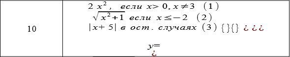

<!DOCTYPE html>
<html lang="en">
  <head>
    <meta charset="UTF-8" />
    <meta name="viewport" content="width=device-width, initial-scale=1.0" />
    <title>Прокопенко Артур</title>
  </head>
  <body>
    <script>
      "use strict";
      let x = parseFloat(prompt("Введите x: "));
      document.write(
        `<h1 style="text-align:center;color:red;">
        Задание 3
        </h1>`
      );
      //&emsp = 4 пробела
      document.write(
        `<p style="font-size:21px;margin:0;">
        &emsp;&emsp;В соответствии со своим вариантом необходимо написать Java-скрипт (lab2-3.html) для вычисления значения функции y.
        При выводе информации предусмотреть форматирование документа, вывод текста задания на лабораторную
        работу, ключая рисунок исходной функции, и вывод информации о разработчике скрипта.
        </p>`
      );
      document.write(
        `<p style="font-size:21px;margin:0;text-align:center;">
        <br>
         <br>
        
        </p>`
      );
      let y
      let way
      if(x > 0 && x != 3){
          y = 2 * x * x
          way = 1
      } else if(x <= -2){
          y = Math.sqrt(x ** 2 + 1)
          way = 2
      } else {
          y = Math.abs(x + 5)
          way = 3
      }
      document.write(
        `<p style="font-size:28px;margin:0;text-align:center;color:darkblue">
        <br>
        &emsp;&emsp;x = ${x}. <br>
        &emsp;&emsp;y = ${y}. <br>
        &emsp;&emsp;случай = ${way}. <br>
        </p>`
      );
      document.write(
        `<h1 style="text-align:center;color:grey;">
        Информация о разработчике скрипта
        </h1>`
      );
      document.write(
        `<p style="font-size:28px;margin:0;text-align:center;color:purple">
        Имя: Артур<br>
        Фамилия: Прокопенко<br>
        Группа: ИП-32<br>
        Любимое слово: ж***<br>
        </p>`
      );
    </script>
  </body>
</html>